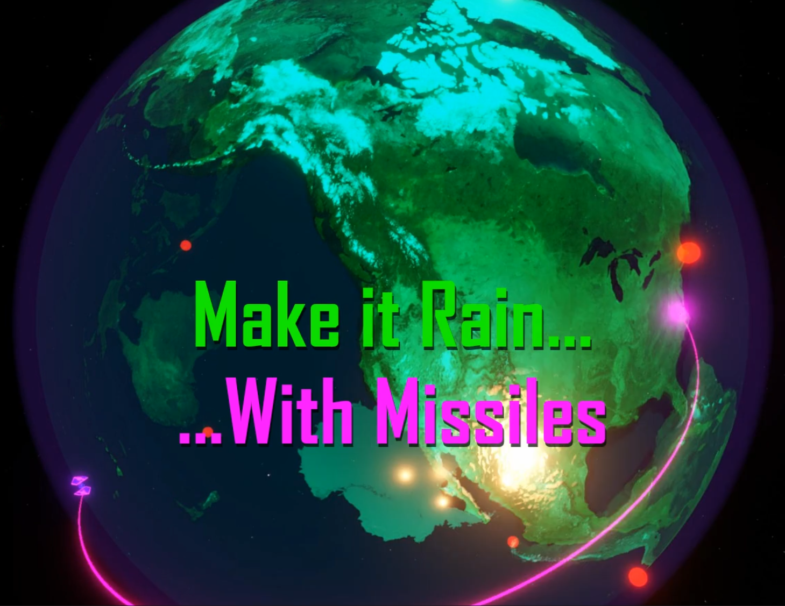

Itch.io
Game of Coriolis
Game of Coriolis
(a.k.a. Ballistic Missile Simulator)
Ever wondered what fictitious forces would look like? This
game lets you experience effects such as cetrifugal- and
coriolis forces in a playful, interactive, although not
entirely peaceful way.
Play on your browser, or download it to you PC.